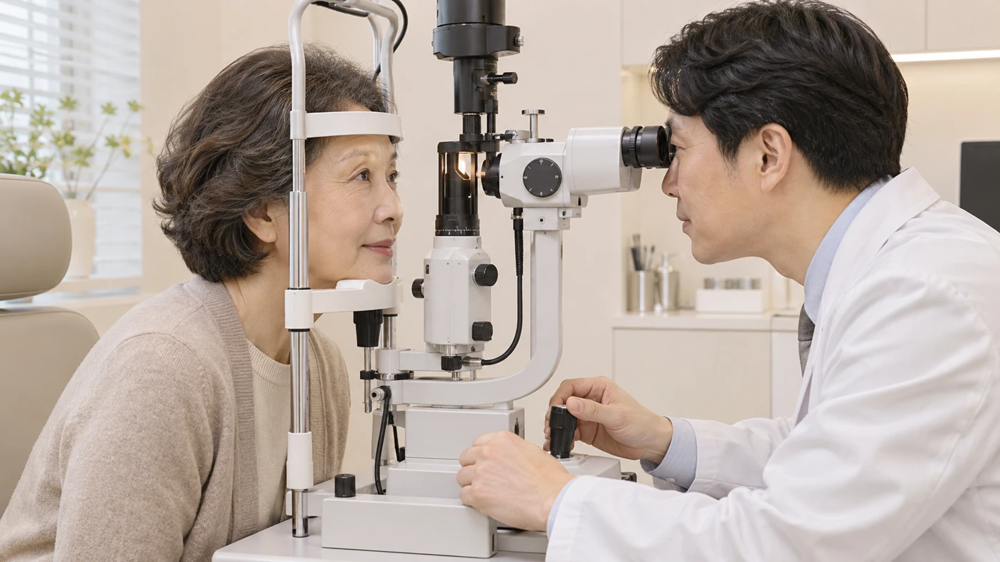
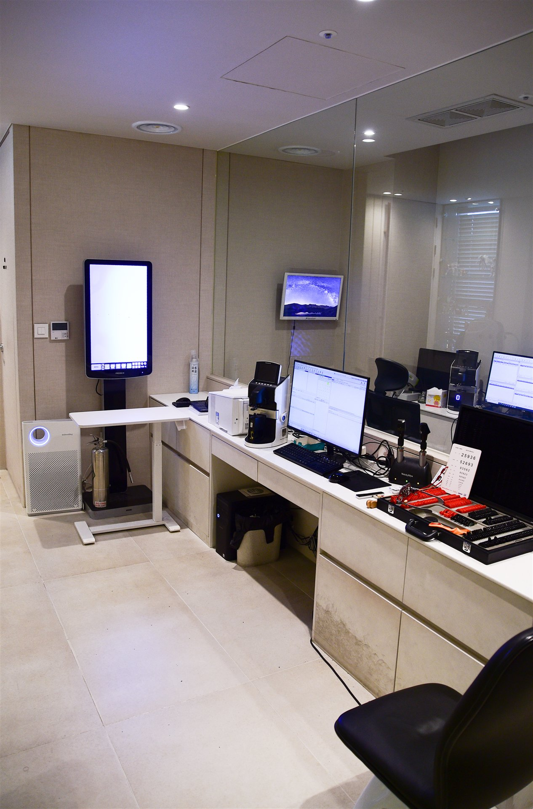
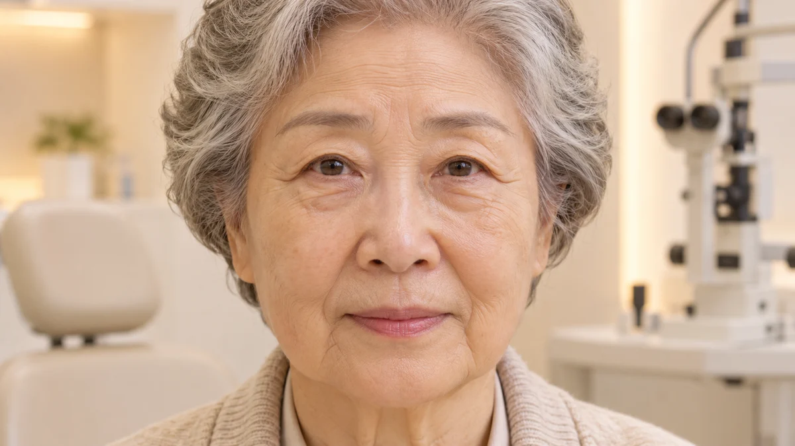
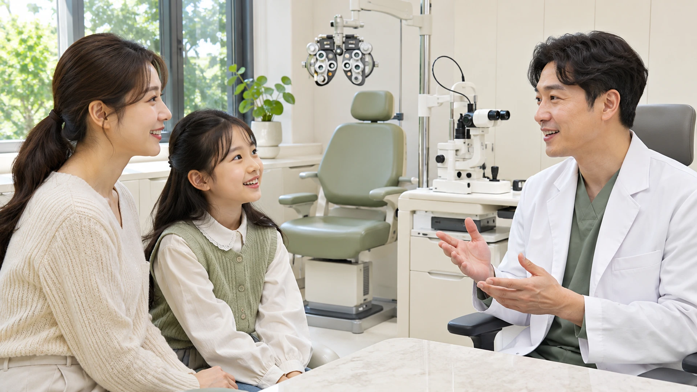

Oculoplastic Care

About
안성형
눈꺼풀과 눈 주변의 모양보다 기능과 불편을 먼저 살핍니다.
눈꺼풀은 눈 표면을 보호하고 눈물을 고르게 펴 줍니다. 처짐이나 속말림 등은 시야와 눈 표면에 영향을 줄 수 있습니다. 눈물흘림·이물감과 눈꺼풀의 변화를 함께 확인합니다. 원인과 정도에 맞춰 필요한 검사와 치료를 상담합니다.

좌우로 움직여 비교해 보세요. 이해를 돕기 위한 연출 이미지입니다.
Issue
안성형
눈꺼풀 문제는 미용뿐 아니라 눈의 기능과 관련됩니다.
처진 눈꺼풀이 동공을 가리면 시야가 불편할 수 있습니다.
속눈썹이 눈을 자극하면 이물감과 눈물흘림이 생길 수 있습니다.
증상과 눈 표면을 살펴 적합한 치료 방향을 정합니다.
연령별 안검하수 유병률
단위: %국내 40세 이상 연구의 퇴행성 안검하수 기준입니다. 모든 안성형 질환의 비율이 아닙니다.
40세 이상 안검하수 유병률
단위: %같은 연구의 전체 추정치입니다. 개인의 수술 필요 여부를 판단하는 기준은 아닙니다.
눈꺼풀의 위치와 눈 표면의 상태를 함께 확인합니다.
Causes of
안성형
원인과 위험요인
노화에 따른 변화, 선천적 구조, 외상·질환 등 등을 함께 살펴봅니다.

노화에 따른 변화
피부와 눈꺼풀 조직의 변화로 처짐·말림이 나타날 수 있습니다.

선천적 구조
태어날 때부터 눈꺼풀 기능이나 위치에 차이가 있을 수 있습니다.
외상·질환 등
외상이나 근육·신경 문제 등 다양한 원인을 확인합니다.
이런 증상이 있으신가요?
평소 느꼈던 눈의 불편을 선택해 주세요.
눈의 변화를 살피고,
필요한 진료를 안내합니다.
체크 개수는 진단 기준이 아닙니다. 정확한 원인은 검사를 통해 확인합니다.
증상을 1개 이상 선택해 주세요.